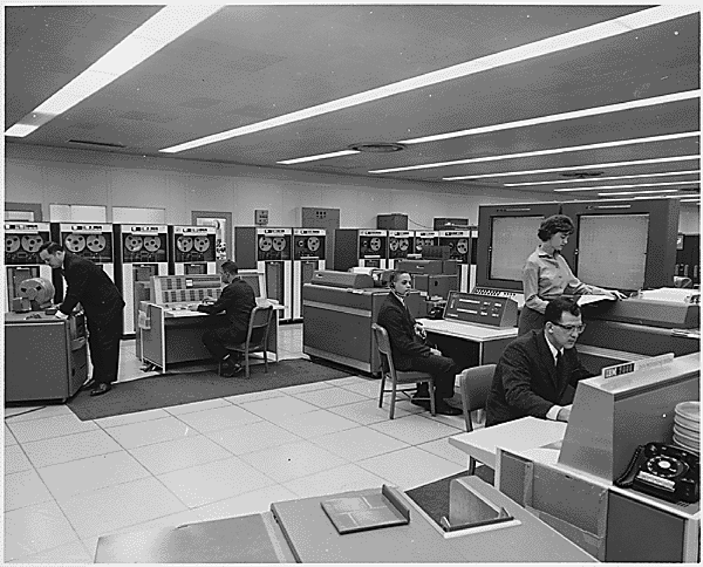

“Well, how did I get here?” a baffled David Byrne sings in the Talking Heads song, “Once in a Lifetime.” The contemporary media landscape is so rich, deep, and multifaceted that it’s easy to imagine American media consumers asking themselves the same question. In 2010, Americans could turn on their television and find 24-hour news channels, as well as music videos, nature documentaries, and reality shows about everything from hoarders to fashion models. That’s not to mention movies available on-demand from cable providers, or television and video available online for streaming or downloading. Half of American households receive a daily newspaper, and the average person holds 1.9 magazine subscriptions.Journalism.org, The State of the News Media 2004, http://www.stateofthemedia.org/2004/ (accessed July 15, 2010); Jim Bilton, “The Loyalty Challenge: How Magazine Subscriptions Work,” In Circulation, January/February 2007. A University of California San Diego study claimed that U.S. households consumed around 3.6 zettabytes of information in 2008, the digital equivalent of a 7-foot high stack of books covering the entire United States, including Alaska—a 350 percent increase since 1980.Doug Ramsey, “UC San Diego Experts Calculate How Much Information Americans Consume.” University of San Diego News Center, December 9, 2009. Americans are exposed to media in taxicabs and busses, in classrooms and doctors’ offices, on highways and in airplanes.
Later chapters will offer in-depth explorations of how particular media developed in different eras. But we can begin to orient ourselves here by briefly examining a history of media in culture, looking at the ways technological innovations have helped to bring us to where we are today, and finally considering the varied roles the media fill in our culture today.
Until Johannes Gutenberg’s 15th-century invention of the movable type printing press, books were painstakingly handwritten, and no two copies were exactly the same. The printing press made the mass production of print media possible. Not only was it much cheaper to produce written material, but new transportation technologies also made it easier for texts to reach a wide audience. It’s hard to overstate the importance of Gutenberg’s invention, which helped usher in massive cultural movements like the European Renaissance and the Protestant Reformation. In 1810, another German printer, Friedrich Koenig, pushed media production even further when he essentially hooked the steam engine up to a printing press, enabling the industrialization of printed media. In 1800, a hand-operated printing press could produce about 480 pages per hour; Koenig’s machine more than doubled this rate. (By the 1930s, many printing presses had an output of 3000 pages an hour.) This increased efficiency helped lead to the rise of the daily newspaper.
As the first Europeans settled the land that would come to be called the United States of America, the newspaper was an essential medium. At first, newspapers helped the Europeans stay connected with events back home. But as the people developed their own way of life—their own culture—newspapers helped give expression to that culture. Political scientist Benedict Anderson has argued that newspapers also helped forge a sense of national identity by treating readers across the country as part of one unified group with common goals and values. Newspapers, he said, helped create an “imagined community.”
The United States continued to develop, and the newspaper was the perfect medium for the increasingly urbanized Americans of the 19th century, who could no longer get their local news merely through gossip and word of mouth. These Americans were living in an unfamiliar world, and newspapers and other publications helped them negotiate the rapidly changing world. The Industrial Revolution meant that people had more leisure time and more money, and media helped them figure out how to spend both.
In the 1830s, the major daily newspapers faced a new threat with the rise of the penny press—newspapers that were low-priced broadsheets. These papers served as a cheaper, more sensational daily news source and privileged news of murder and adventure over the dry political news of the day. While earlier newspapers catered to a wealthier, more educated audience, the penny press attempted to reach a wide swath of readers through cheap prices and entertaining (often scandalous) stories. The penny press can be seen as the forerunner to today’s gossip-hungry tabloids.
Figure 1.3

The penny press appealed to readers’ desires for lurid tales of murder and scandal.
In the early decades of the 20th century, the first major non-print forms of mass media—film and radio—exploded in popularity. Radios, which were less expensive than telephones and widely available by the 1920s, especially had the unprecedented ability of allowing huge numbers of people to listen to the same event at the same time. In 1924, President Calvin Coolidge’s preelection speech reached more than 20 million people. Radio was a boon for advertisers, who now had access to a large and captive audience. An early advertising consultant claimed that the early days of radio were “a glorious opportunity for the advertising man to spread his sales propaganda” thanks to “a countless audience, sympathetic, pleasure seeking, enthusiastic, curious, interested, approachable in the privacy of their homes.”Asa Briggs and Peter Burke, A Social History of the Media: From Gutenberg to the Internet (Malden, MA: Polity Press, 2005).
The reach of radio also further helped forge an American culture. The medium was able to downplay regional differences and encourage a unified sense of the American lifestyle—a lifestyle that was increasingly driven and defined by consumer purchases. “Americans in the 1920s were the first to wear ready-made, exact-size clothing…to play electric phonographs, to use electric vacuum cleaners, to listen to commercial radio broadcasts, and to drink fresh orange juice year round.”Digital History, “The Formation of Modern American Mass Culture,” The Jazz Age: The American 1920s, 2007, http://www.digitalhistory.uh.edu/database/article_display.cfm?hhid=454 (accessed July 15, 2010). This boom in consumerism put its stamp on the 1920s, and, ironically, helped contribute to the Great Depression of the 1930s.Library of Congress, “Radio: A Consumer Product and a Producer of Consumption,” http://lcweb2.loc.gov:8081/ammem/amrlhtml/inradio.html (accessed July 15, 2010).
The post-World War II era in the United States was marked by prosperity, and by the introduction of a seductive new form of mass communication: television. In 1946, there were about 17,000 televisions in the entire United States. Within seven years, two-thirds of American households owned at least one set. As the United States’ gross national product (GNP) doubled in the 1950s, and again in the 1960s, the American home became firmly ensconced as a consumer unit. Along with a television, the typical U.S. family owned a car and a house in the suburbs, all of which contributed to the nation’s thriving consumer-based economy.
Broadcast television was the dominant form of mass media. There were just three major networks, and they controlled over 90 percent of the news programs, live events, and sitcoms viewed by Americans. On some nights, close to half the nation watched the same show! Some social critics argued that television was fostering a homogenous, conformist culture by reinforcing ideas about what “normal” American life looked like. But television also contributed to the counterculture of the 1960s. The Vietnam War was the nation’s first televised military conflict, and nightly images of war footage and war protestors helped intensify the nation’s internal conflicts.
Broadcast technology, including radio and television, had such a hold of the American imagination that newspapers and other print media found themselves having to adapt to the new media landscape. Print media was more durable and easily archived, and allowed users more flexibility in terms of time—once a person had purchased a magazine, he could read it whenever and wherever he’d like. Broadcast media, in contrast, usually aired programs on a fixed schedule, which allowed it to both provide a sense of immediacy but also impermanence—until the advent of digital video recorders in the 21st century, it was impossible to pause and rewind a television broadcast.
The media world faced drastic changes once again in the 1980s and 1990s with the spread of cable television. During the early decades of television, viewers had a limited number of channels from which to choose. In 1975, the three major networks accounted for 93 percent of all television viewing. By 2004, however, this share had dropped to 28.4 percent of total viewing, thanks to the spread of cable television. Cable providers allowed viewers a wide menu of choices, including channels specifically tailored to people who wanted to watch only golf, weather, classic films, sermons, or videos of sharks. Still, until the mid-1990s, television was dominated by the three large networks. The Telecommunications Act of 1996, an attempt to foster competition by deregulating the industry, actually resulted in many mergers and buyouts of small companies by large companies. The broadcast spectrum in many places was in the hands of a few large corporations. In 2003, the Federal Communications Commission (FCC) loosened regulation even further, allowing a single company to own 45 percent of a single market (up from 25 percent in 1982).
New media technologies both spring from and cause cultural change. For this reason, it can be difficult to neatly sort the evolution of media into clear causes and effects. Did radio fuel the consumerist boom of the 1920s, or did the radio become wildly popular because it appealed to a society that was already exploring consumerist tendencies? Probably a little bit of both. Technological innovations such as the steam engine, electricity, wireless communication, and the Internet have all had lasting and significant effects on American culture. As media historians Asa Briggs and Peter Burke note, every crucial invention came with “a change in historical perspectives.”Asa Briggs and Peter Burke, A Social History of the Media: From Gutenberg to the Internet (Malden, MA: Polity Press, 2005). Electricity altered the way people thought about time, since work and play were no longer dependent on the daily rhythms of sunrise and sunset. Wireless communication collapsed distance. The Internet revolutionized the way we store and retrieve information.
The contemporary media age can trace its origins back to the electrical telegraph, patented in the United States by Samuel Morse in 1837. Thanks to the telegraph, communication was no longer linked to the physical transportation of messages. Suddenly, it didn’t matter whether a message needed to travel five or five hundred miles. Suddenly, information from distant places was nearly as accessible as local news. When the first transatlantic cable was laid in 1858, allowing near-instantaneous communication from the United States to Europe, The London Times described it as “the greatest discovery since that of Columbus, a vast enlargement…given to the sphere of human activity.”Asa Briggs and Peter Burke, A Social History of the Media: From Gutenberg to the Internet (Malden, MA: Polity Press, 2005). Celebrations broke out in New York as people marveled at the new media. Telegraph lines began to stretch across the globe, making their own kind of world wide web.
Not long after the telegraph, wireless communication (which eventually led to the development of radio, television, and other broadcast media) emerged as an extension of telegraph technology. Although many 19th-century inventors, including Nikola Tesla, had a hand in early wireless experiments, it was Italian-born Guglielmo Marconi who is recognized as the developer of the first practical wireless radio system. This mysterious invention, where sounds seemed to magically travel through the air, captured the world’s imagination. Early radio was used for military communication, but soon the technology entered the home. The radio mania that swept the country inspired hundreds of applications for broadcasting licenses, some from newspapers and other news outlets, while other radio station operators included retail stores, schools, and even cities. In the 1920s, large media networks—including the National Broadcasting Company (NBC) and the Columbia Broadcasting System (CBS)—were launched, and they soon began to dominate the airwaves. In 1926, they owned 6.4 percent of U.S. broadcasting stations; by 1931, that number had risen to 30 percent.Asa Briggs and Peter Burke, A Social History of the Media: From Gutenberg to the Internet (Malden, MA: Polity Press, 2005).
The 19th-century development of photographic technologies would lead to the later innovations of cinema and television. As with wireless technology, several inventors independently came up with photography at the same time, among them the French inventors Joseph Niepce and Louis Daguerre, and British scientist William Henry Fox Talbot. In the United States, George Eastman developed the Kodak camera in 1888, banking on the hope that Americans would welcome an inexpensive, easy-to-use camera into their homes, as they had with the radio and telephone. Moving pictures were first seen around the turn of the century, with the first U.S. projection hall opening in Pittsburgh in 1905. By the 1920s, Hollywood had already created its first stars, most notably Charlie Chaplin. By the end of the 1930s, Americans were watching color films with full sound, including Gone with the Wind and The Wizard of Oz.
Television, which consists of an image being converted to electrical impulses, transmitted through wires or radio waves, and then reconverted into images, existed before World War II but really began to take off in the 1950s. In 1947, there were 178,000 television sets made in the United States; five years later, there were 15 million. Radio, cinema, and live theater all saw a decline in the face of this new medium that allowed viewers to be entertained with sound and moving pictures without having to leave their homes.
How was this powerful new medium going to be operated? After much debate, the United States opted for the market. Competing commercial stations (including the radio powerhouses of CBS and NBC) owned stations and sold advertising and commercial-driven programming dominated. Britain took another track with its government-managed British Broadcasting Corporation (BBC). Funding was driven by licensing fees instead of advertisements. In contrast to the American system, the BBC strictly regulated the length and character of commercials that could be aired. U.S. television, propelled by prosperity, advertising and increasingly powerful networks, flourished. By the beginning of 1955, there were 36 million television sets in the United States, and 4.8 million in all of Europe.Asa Briggs and Peter Burke, A Social History of the Media: From Gutenberg to the Internet (Malden, MA: Polity Press, 2005). Important national events, broadcast live for the first time, were an impetus for consumers to buy sets and participate in the spectacle—both England and Japan saw a boom in sales before important royal weddings in the 1950s.
Figure 1.4
In the 1960s, the concept of a useful portable computer was still a dream; huge mainframes were required to run a basic operating system.
For the last stage in this fast history of media technology, how’s this for a prediction? In 1969, management consultant Peter Drucker predicted that the next major technological innovation after television would be an “electronic appliance” that would be “capable of being plugged in wherever there is electricity and giving immediate access to all the information needed for school work from first grade through college.” He said it would be the equivalent of Edison’s light bulb in its ability to revolutionize how we live. He had, in effect, predicted the computer. He was prescient about the effect that computers and the Internet would have on education, social relationships, and the culture at large. The inventions of random access memory (RAM) chips and microprocessors in the 1970s were important steps along the way to the Internet age. As Briggs and Burke note, these advances meant that “hundreds of thousands of components could be carried on a microprocessor.” The reduction of many different kinds of content to digitally stored information meant that “print, film, recording, radio and television and all forms of telecommunications [were] now being thought of increasingly as part of one complex.” This process, also known as convergence, will be discussed in later chapters and is a force that’s shaping the face of media today.
Even a brief history of media can leave one breathless. The speed, reach, and power of the technology are humbling. The evolution can seem almost natural and inevitable, but it is important to stop and ask a basic question: Why? Why do media seem to play such an important role in our lives and our culture? With reflection, we can see that media fulfill several basic roles.
One obvious role is entertainment. Media can act as a springboard for our imaginations, a source of fantasy, and an outlet for escapism. In the 19th century, Victorian readers, disillusioned by the grimness of the Industrial Revolution, found themselves drawn into books that offered fantastic worlds of fairies and other unreal beings. In the first decade of the 21st century, American television viewers could relax at the end of a day by watching singers, both wonderful and terrible, compete to be idols or watch two football teams do battle. Media entertain and distract us in the midst of busy and hard lives.
Media can also provide information and education. Information can come in many forms, and often blurs the line with entertainment. Today, newspapers and news-oriented television and radio programs make available stories from across the globe, allowing readers or viewers in London to have access to voices and videos from Baghdad, Tokyo, or Buenos Aires. Books and magazines provide a more in-depth look at a wide range of subjects. Online encyclopedias have articles on topics from presidential nicknames to child prodigies to tongue-twisters in various languages. The Massachusetts Institute of Technology (MIT) has posted free lecture notes, exams, and audio and video recordings of classes on its OpenCourseWare website, allowing anyone with an Internet connection access to world-class professors.
Another useful aspect of media is its ability to act as a public forumA social space that is open to all, and that serves as a place for discussion of important issues. A public forum is not always a physical space; for example, a newspaper can be considered a public forum. for the discussion of important issues. In newspapers or other periodicals, letters to the editor allow readers to respond to journalists, or voice their opinions on the issues of the day. These letters have been an important part of U.S. newspapers even when the nation was a British colony, and they have served as a means of public discourse ever since. Blogs, discussion boards, and online comments are modern forums. Indeed, the Internet can be seen as a fundamentally democratic medium that allows people who can get online the ability to put their voices out there—though whether anyone will hear is another question.
Media can also serve to monitor government, business, and other institutions. Upton Sinclair’s 1906 novel The Jungle exposed the miserable conditions in the turn-of-the-century meatpacking industry. In the early 1970s, Washington Post reporters Bob Woodward and Carl Bernstein uncovered evidence of the Watergate break-in and subsequent cover-up, which eventually led to the resignation of then-president Richard Nixon. Online journalists today try to uphold the “watchdog” role of the media.
Thinking more deeply, we can recognize that certain media are better at certain roles. Media have characteristics that influence how we use them. While some forms of mass media are better suited to entertainment, others make more sense as a venue for spreading information. For example, in terms of print media, books are durable and able to contain lots of information, but are relatively slow and expensive to produce. In contrast, newspapers are comparatively cheaper and quicker to create, making them a better medium for the quick turnover of daily news. Television provides vastly more visual information than radio, and is more dynamic than a static printed page; it can also be used to broadcast live events to a nationwide audience, as in the annual State of the Union addresses given by the U.S. president. However, it is also a one-way medium—that is, it allows for very little direct person-to-person communication. In contrast, the Internet encourages public discussion of issues and allows nearly everyone who wants a voice to have one. However, the Internet is also largely unmoderated and uncurated. Users may have to wade through thousands of inane comments or misinformed amateur opinions in order to find quality information.
As mentioned at the start of this chapter, the 1960s media theorist Marshall McLuhan took these ideas one step further, with the phrase “the medium is the message.”A phrase coined by media theorist Marshall McLuhan asserting that every medium delivers information in a different way, and that content is fundamentally shaped by the medium of transmission. McLuhan emphasized that each medium delivers information in a different way and that content is fundamentally shaped by that medium. For example, although television news has the advantage of offering video and live coverage, making a story come vividly alive, it is also a faster-paced medium. That means stories get reported in different ways than print. A story told on television will often be more visual, have less information, and be able to offer less history and context than the same story covered in a monthly magazine. This feature of media technology leads to interesting arguments. For example, some people claim that television presents “dumbed down” information. Others disagree. In an essay about television’s effects on contemporary fiction, writer David Foster Wallace scoffed at the “reactionaries who regard TV as some malignancy visited on an innocent populace, sapping IQs and compromising SAT scores while we all sit there on ever fatter bottoms with little mesmerized spirals revolving in our eyes…Treating television as evil is just as reductive and silly as treating it like a toaster with pictures.”David Foster Wallace, A Supposedly Fun Thing I’ll Never Do Again (New York: Little Brown, 1997).
We do not have to cast value judgments but can affirm: People who get the majority of their news from a particular medium will have a particular view of the world shaped not just by the content of what they watch but also by its medium. Or, as computer scientist Alan Kay put it, “Each medium has a special way of representing ideas that emphasize particular ways of thinking and de-emphasize others.”Alan Kay, “The Infobahn is Not the Answer,” Wired, May 1994. The Internet has made this discussion even richer because it seems to hold all other media within it—print, radio, film, television and more. If indeed the medium is the message, the Internet provides us with an extremely interesting message to consider.
Media fulfill several roles in culture, including the following:
Choose two different types of mass communication—radio shows, television broadcasts, Internet sites, newspaper advertisements, and so on from two different kinds of media. Make a list of what role(s) each one fills, keeping in mind that much of what we see, hear, or read in the mass media has more than one aspect. Consider the following questions: Does the type of media suit the social role? Why did the creators of this particular message present it in the particular way, and in this particular medium?